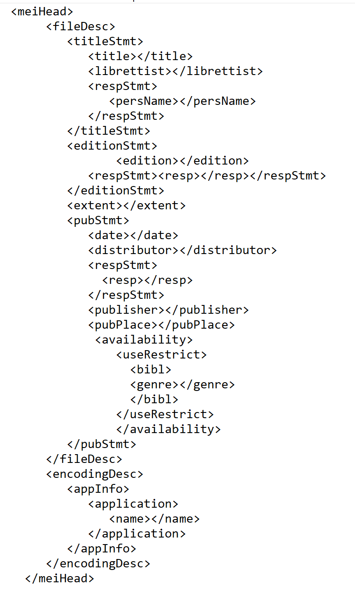

Music Curation and Analytics, 2023-24
Week 5
During groupwork, the areas identified as important for metadata were the original composer, the publisher and date, the title, licensing laws, and online access/distributors. For my specific piece, La Boheme, I also wanted to include the genre and the librettist, as well as the reprint I was referencing. In the end, this meant the beginning of my MEI header included the following:

The full MEI header can be found in the file LaBoheme.Cello.P43.meiheader.mei.
I also wanted to utilise the auth.uri feature when referencing the composer, and chose to link to VIAF for Puccini to provide users with more information sources where possible. I also utilised MEIfriend heavily when creating the header and used it's suggestions and reviewing features heavily.
Week 7
Due to already including licensing and genre in the work from the previous weeks and therefore not having an 'old' version of the MEI header, I have combined the weeks on this page. Due to the age of the Opera, there were not many licensing issues that needed addressed as it has been over 70 years since Puccini died and therefore is in the public domain.